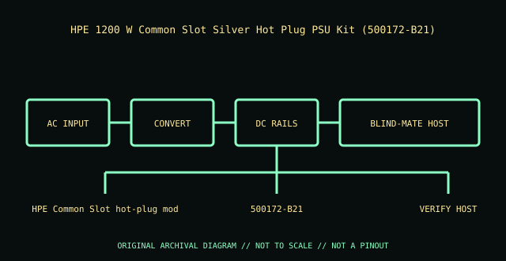

[ POWER CONVERSION // IDENTIFIED MODEL ]
HPE 1200 W Common Slot Silver Hot Plug PSU Kit (500172-B21)
Exact module identity: HPE 500172-B21. This record applies only to this manufacturer option/PID; nominal wattage or a similar shell does not prove cross-model compatibility.

HIGH-VOLTAGE WARNING: Disconnect mains before external inspection. Never open a PSU. Internal capacitors may retain lethal charge after unplugging. Do not probe or repair its interior; use qualified service or replace the unit.
Model-specific ratings & fit
| Manufacturer identity / exact module | HPE 500172-B21 — HPE 1200 W Common Slot Silver Hot Plug PSU Kit (500172-B21) |
|---|---|
| Rated output / rail information | 1200 W class; +12 VDC main rail (1200 W class); standby output and continuous rail limits are as specified on the exact module label. |
| AC input | 100–240 V AC, 50/60 Hz; check the exact module label for voltage-dependent maximum output. |
| Efficiency | HPE Common Slot Silver / high-efficiency class; no unsupported exact percentage asserted |
| Form factor / mounting | HPE Common Slot hot-plug module for supported legacy ProLiant platforms; not Flex Slot or M-CRPS. |
| Connectors / backplane | IEC AC inlet; proprietary HPE Common Slot blind-mate connector to the server power backplane. |
| System compatibility | Legacy HPE ProLiant Gen6/Gen7 Common Slot systems that explicitly list 500172-B21; not a substitute for newer Flex Slot parts despite the shared slot name. |
| Redundancy / cooling | Redundant/hot-plug use only in a supported matching bay and validated pair; observe host power budget and airflow. |
| Revision distinctions | 500172-B21 identifies the 1200 W Common Slot Silver generation. Match labels and host service parts list exactly; avoid combining dissimilar efficiency classes. |
Compatibility & safe installation
- Confirm full manufacturer part/PID, revision and label against the host’s exact system QuickSpecs, service manual and power-supply matrix.
- Check input voltage, rail limits, connector/backplane keying, bay dimensions, supported efficiency class and cooling direction before installation.
- Hot-plug is conditional: verify healthy remaining supply capacity, supported redundancy state and the host service procedure before removing a live module.
- Do not mix modules or use modular leads across models unless the system manufacturer explicitly approves that combination.
- Never open or probe a PSU. Retire damaged, wet, burnt, corroded, modified or unidentified units.
Revision & archival notes
500172-B21 identifies the 1200 W Common Slot Silver generation. Match labels and host service parts list exactly; avoid combining dissimilar efficiency classes.
Archive a clear nameplate photograph, complete option/FRU number, hardware revision, AC inlet and connector labels, host model, and source-document revision. Distinguish manufacturer ratings from derived values.
Manufacturer references
- HPE PartSurfer — 500172-B21Manufacturer part lookup for this exact option/spare identifier.
- HPE Common Slot Power Supplies QuickSpecsCommon Slot supply family and electrical class reference; confirm legacy generation and exact host option.
- HPE ProLiant DL380e Gen8 Server — power supplies and supported optionsServer-specific installation and safety reference; this newer example does not imply compatibility with Gen6/Gen7 systems.
Manufacturer nameplate and applicable system manual take precedence over this summary.